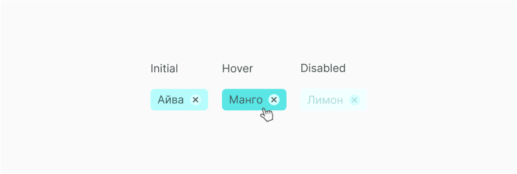

Chip
Chip помогает выводить нужную информацию, фильтровать содержимое или инициировать действия. Chip может отображать разные типы интерактивных элементов в одной области, таких как список выбираемого времени, фильма или контактов электронной почты в виде тегов. Как пример, с помощью chip можно предоставлять контактную информацию в удобном виде: при отправке текстовых сообщений они будут отображаться в поле «кому» когда пользователь начинает вводить имя контакта и выбирает нужный.
Структура компонента
Chip состоит из контейнера, текстового элемента и ,иногда, из одной или нескольких иконок. Так как выбираемая строка из списка может быть длинной, мы можем задать максимальный размер контейнера chip и срезать выбранный текст. Делаем мы это для того, чтобы chips в input вставали корректно.
Состояние компонента
Chip может быть удаляемым и неудаляемым. Зависит это от того, какую функциональность должен иметь.
В нашем случае нужен удаляемый chip с иконкой крестика. Также управлять chip можно снимая выделение с элемента списка из option list. Состояния такого chip показаны ниже.
Реализация
Для начала в папке проекта создаём новую, в неё кладём файлы A_Chip.jsx и A_Chip.css. Затем описываем функционал chip. Получаем следующий код, который описывает все состояния disabled, initial, hover и выводит в chip иконку удаления.
Chip содержит icon Q_Icon cross, которая лежит в отдельной папке image в файле Q_Icon.css. В нем мы храним все иконки, которые нужны для различных компонентов, а их фон и размер задаем в файле со стилем всего chip. Это мы покажем в структуре CSS.
import classnames from 'classnames'
import React, { PureComponent } from 'react'
import './A_Chip.css'
export default class A_Chip extends PureComponent {
constructor(props) {
super(props)
}
handleClick = () => {
const { disabled, handleClick } = this.props
if (!disabled) {
handleClick()
}
}
render() {
const { text, disabled } = this.props
const classes = classnames({
A_Chip: true,
disabled: disabled
})
return (
<div className={classes}>
{text}
<div className="Q_Icon cross" onClick={this.handleClick} />
</div>
)
}
}Затем, в файле A_Chip.css прописываем стили для A_Chip и Q_Icon cross. Не забываем описать для chip состоянии disabled и hover.
.A_Chip {
position: relative;
padding: 6px 38px 6px 10px;
border-radius: 10px;
font-size: 16px;
font-weight: 300;
color: #426060;
background-color: #b7fcfc;
cursor: default;
user-select: none;
}
.A_Chip .Q_Icon.cross {
position: absolute;
top: 6px;
right: 10px;
width: 20px;
height: 20px;
margin-left: 8px;
border-radius: 20px;
background-color: #d7ffff;
cursor: pointer;
}
.A_Chip .Q_Icon.cross:hover {
background-color: #5be7e7;
}
.A_Chip.disabled {
color: #abd9d9;
background-color: #f2ffff;
cursor: default;
}
.A_Chip.disabled .Q_Icon.cross:hover {
background-color: #d7ffff;
cursor: default;
}Мы создали компонент, но описали только его функционал, теперь его нужно отрендерить. Попробуй теперь этот компонент вывести согласно своей структуре проекта. Ты можешь увидеть как это делаем мы, а также посмотреть получившийся chip.
import React from 'react'
import ReactDOM from 'react-dom'
handleClick = () => {
console.log('click')
}
document.addEventListener('DOMContentLoaded', () => {
ReactDOM.render(
<div>
<A_Chip text="Text" handleClick={handleClick} />
<A_Chip text="Text" disabled={true} handleClick={handleClick} />
</div>,
document.body
)
})Получаем следующий результат, который отображает два компонента chip во всех состояниях.
Ссылки
Также для тебя ссылки на Figma с дизайн системой и GitHub с библиотекой компонентов.
Составляющие
Этот компонент часто выводится в следующих компонентах.